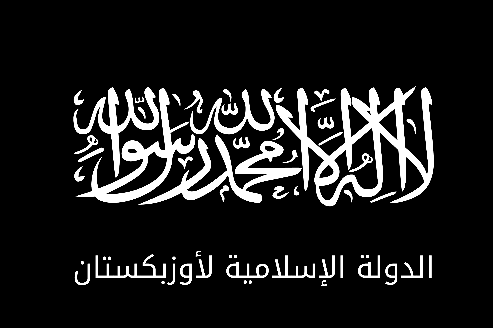

Just saw this flag from the new Islamic nationalist movement in Uzbekistan. Apparently they formed during the drought and want to create a "Greater Uzbekistan" under Sharia law. The flag is pretty much what you'd expect - black with white Arabic calligraphy and the group's name in Arabic.

What do you guys think? Pretty standard Islamist flag design or is there something unique here?